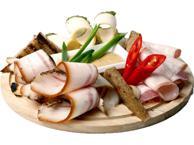
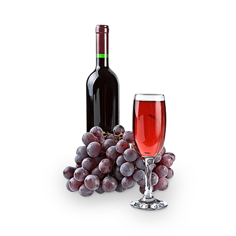
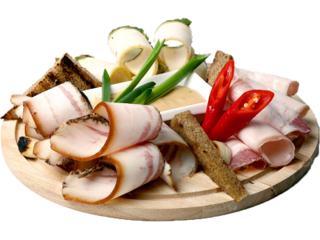
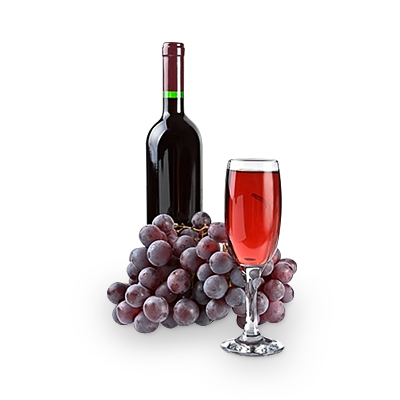

О нас
Просторный и с размахом, ресторан, объединивший в себе две самых богатых кухни мира - украинскую и грузинскую BORSHCHAPURI - располагается в Мариинском парке, рядом с Музеем воды. Название знакомо каждому, БОРЩ – известнейшее во всем мире горячее блюдо, а также – одна из визиток Украины, и ХАЧАПУРИ - настоящая гордость Грузии.
Borshchapuri - заведение, в котором грузинская культура переплелась с современной украинской, традиционная грузинская кухня с современными тенденциями, а всем известное грузинское и украинское гостеприимство замиксовались в единое целое!
За каждое направление меню отвечают специально приглашенные мастера из разных регионов Украины и Грузии. Мангал-меню заведует мастер из Кахетии, откуда, к слову, и родом легендарный грузинский шашлык.Последнего здесь 7 видов, и готовится он на открытом огне. Еще одна гордость ресторана – 4 вида люля-кебаб: с бараниной, индейкой, свининой, а также с говядиной и сулугуни. Хачапури для вас приготовит мастер из Аджарии, лучший ученик Гии Агирбы – самого известного повара из Грузии, который тоже участвовал в разработке меню. Повар из Сванетии отвечает за кубдари (традиционное блюдо этого региона), чвиштари (кукурузную лепешку с сулугуни) и сванскую соль. А мастер из Имеретии приготовит харчо. Из специалитетов здесь стоит попробовать цыпленка табака под соусом из аджики и фирменную доску-ассорти из шашлыков, перепелки и овощей для большой компании. Ну и куда же без сочных хинкали, которые рискуют стать лучшими в городе!
Борщ мы готовим по древнему секретному рецепту, который передаётся из поколения в поколение, потомок которого работает в нашем ресторане! Сало, с Закарпатских регионов и карпатский чай, все это не оставит вас равнодушными.
У нас вы найдете огромную коллекцию исключительно грузинских вин, а также вино собственного приготовления.Просторный и с размахом, ресторан, объединивший в себе две самых богатых кухни мира - украинскую и грузинскую BORSHCHAPURI - располагается в Мариинском парке, рядом с Музеем воды. Название знакомо каждому, БОРЩ – известнейшее во всем мире горячее блюдо, а также – одна из визиток Украины, и ХАЧАПУРИ - настоящая гордость Грузии.
Borshchapuri - заведение, в котором грузинская культура переплелась с современной украинской, традиционная грузинская кухня с современными тенденциями, а всем известное грузинское и украинское гостеприимство замиксовались в единое целое!
За каждое направление меню отвечают специально приглашенные мастера из разных регионов Украины и Грузии. Мангал-меню заведует мастер из Кахетии, откуда, к слову, и родом легендарный грузинский шашлык. Последнего здесь 7 видов, и готовится он на открытом огне. Еще одна гордость ресторана – 4 вида люля-кебаб: с бараниной, индейкой, свининой, а также с говядиной и сулугуни. Хачапури для вас приготовит мастер из Аджарии, лучший ученик Гии Агирбы – самого известного повара из Грузии, который тоже участвовал в разработке меню. Повар из Сванетии отвечает за кубдари (традиционное блюдо этого региона), чвиштари (кукурузную лепешку с сулугуни) и сванскую соль. А мастер из Имеретии приготовит харчо. Из специалитетов здесь стоит попробовать цыпленка табака под соусом из аджики и фирменную доску-ассорти из шашлыков, перепелки и овощей для большой компании. Ну и куда же без сочных хинкали, которые рискуют стать лучшими в городе!
Борщ мы готовим по древнему секретному рецепту, который передаётся из поколения в поколение, потомок которого работает в нашем ресторане! Сало, с Закарпатских регионов и карпатский чай, все это не оставит вас равнодушными.
в котором грузинская культура переплелась с современной украинской, традиционная грузинская кухня с современными тенденциями, а всем известное грузинское и украинское гостеприимство замиксовались в единое целое!
За каждое направление меню отвечают специально приглашенные мастера из разных регионов Украины и Грузии. Мангал-меню заведует мастер из Кахетии, откуда, к слову, и родом легендарный грузинский шашлык.Последнего здесь 7 видов, и готовится он на открытом огне. Еще одна гордость ресторана – 4 вида люля-кебаб: с бараниной, индейкой, свининой, а также с говядиной и сулугуни. Хачапури для вас приготовит мастер из Аджарии, лучший ученик Гии Агирбы – самого известного повара из Грузии, который тоже участвовал в разработке меню. Повар из Сванетии отвечает за кубдари (традиционное блюдо этого региона), чвиштари (кукурузную лепешку с сулугуни) и сванскую соль. А мастер из Имеретии приготовит харчо. Из специалитетов здесь стоит попробовать цыпленка табака под соусом из аджики и фирменную доску-ассорти из шашлыков, перепелки и овощей для большой компании. Ну и куда же без сочных хинкали, которые рискуют стать лучшими в городе!
Борщ мы готовим по древнему секретному рецепту, который передаётся из поколения в поколение, потомок которого работает в нашем ресторане! Сало, с Закарпатских регионов и карпатский чай, все это не оставит вас равнодушными.
У нас вы найдете огромную коллекцию исключительно грузинских вин, а также вино собственного приготовления.Просторный и с размахом, ресторан, объединивший в себе две самых богатых кухни мира - украинскую и грузинскую BORSHCHAPURI - располагается в Мариинском парке, рядом с Музеем воды. Название знакомо каждому, БОРЩ – известнейшее во всем мире горячее блюдо, а также – одна из визиток Украины, и ХАЧАПУРИ - настоящая гордость Грузии.
Borshchapuri - заведение, в котором грузинская культура переплелась с современной украинской, традиционная грузинская кухня с современными тенденциями, а всем известное грузинское и украинское гостеприимство замиксовались в единое целое!
За каждое направление меню отвечают специально приглашенные мастера из разных регионов Украины и Грузии. Мангал-меню заведует мастер из Кахетии, откуда, к слову, и родом легендарный грузинский шашлык. Последнего здесь 7 видов, и готовится он на открытом огне. Еще одна гордость ресторана – 4 вида люля-кебаб: с бараниной, индейкой, свининой, а также с говядиной и сулугуни. Хачапури для вас приготовит мастер из Аджарии, лучший ученик Гии Агирбы – самого известного повара из Грузии, который тоже участвовал в разработке меню. Повар из Сванетии отвечает за кубдари (традиционное блюдо этого региона), чвиштари (кукурузную лепешку с сулугуни) и сванскую соль. А мастер из Имеретии приготовит харчо. Из специалитетов здесь стоит попробовать цыпленка табака под соусом из аджики и фирменную доску-ассорти из шашлыков, перепелки и овощей для большой компании. Ну и куда же без сочных хинкали, которые рискуют стать лучшими в городе!
Борщ мы готовим по древнему секретному рецепту, который передаётся из поколения в поколение, потомок которого работает в нашем ресторане! Сало, с Закарпатских регионов и карпатский чай, все это не оставит вас равнодушными.
События
Где отметить день рождения в Киеве, который ресторан выбрать - таким вопросом задается много именинников. Ведь хочется, чтобы заведение понравилось всем - и виновнику торжества, и гостям. Чтобы было вкусно, уютно, душевно и празднично. Чтобы день рождения, тот самый, который раз в год, стал самым памятным праздником, и эмоции от него согревали ваше сердце следующие 365 дней. Мы приглашаем вас в BORSHCHAPURI- ресторан Киева, который идеально подходит для празднования дня рождения.
У нас прекрасная локация (всего в 2 минутах от м. Олимпийская). В двухэтажном заведении с панорамными окнами вы сможете выбрать зал, который будет максимально комфортным для вас и всех приглашенных. Планируете небольшое торжество в кругу самых близких? Тогда идеальным вариантом станет наш малый банкетный зал, где можно разместить до 35 гостей. Хотите провести большую вечеринку? Мы предложим вам наш основной зал, где помещается до 100 человек. Если в ваших планах - обед или ужин с несколькими друзьями, мы с радостью оформим для вас стол, в соответствии с количеством гостей в основном зале или на летних террасах.
Одним из основных критериев при выборе ресторана для празднования дня рождения в Киеве остается меню. Мы позаботимся о том, чтобы вы и ваши гости получили настоящее гастрономическое удовольствие. В вашем распоряжении - основное и банкетное меню, где можно выбрать самые популярные блюда различных кухонь мира. Стоимость банкета - от 750 гривен на человека.
Любой праздник - это не только вкусная еда, но и развлечения. Чтобы событие было яркой и веселой, мы предлагаем услуги анiматора или ведущего. А на летних террасах можно оформить креативные фотозоне: чтобы запечатлеть самые яркие кадры дня рождения.
Дополнительные услуги:
- Детское меню
- Детская площадка
- Проектор, экран, плазма
- Индивидуальное составление меню
- Скидки в день рождения
День рождения - это, прежде всего, подарки! BORSHCHAPURI любит своих гостей и каждому имениннику дарит скидку 30%. Воспользоваться ею можно в течение 7 дней до и после дня рождения. Для этого достаточно предоставить паспорт или его копию, и наши администраторы вам все оформят. Согласитесь, скидка на день рождения - большой плюс при выборе ресторана!
Все мы верим с детства, что Новогодняя ночь - особая ночь. Это время, когда сбываются желания и мечты, а всё, что кажется невозможным - легко оправдывается.
В нашем ресторане БОРЩАПУРІ новогодняя атмосфера ощущается особенно остро. Она в белом сияющем снеге, слепит глаза, в чистом морозном воздухе, в елях, присыпанных белой пудрой, в небе, усыпанном звёздами, что светят ярче, и в тишине высокогорной ночи.
Новый год в "BORSHCHAPURI" - это современная уютная атмосфера, изысканный круг гостей и блюд, которые способны удовлетворить вкусы самых изощрённых гурманов.
Экзотические закуски, вкусные отборные блюда, отличные десерты и элитные алкогольные напитки удовлетворят гастрономические вкусы наших гостей.
А весёлый новогодний настрой обеспечат наши ведущие, аниматоры и диджей.
В программе вечера художник анимации световыми кистями превратит свет в живую энергию и воплотит различные истории. Ведущий неповторимого торжественного вечера Олесь Зинькив, помогать которому будут Дед Мороз и Снегурочка.
Предложение сделано, кольцо сияет на пальчике и вот вы уже - жених и невеста! Время планировать свадьбу! Одним из главных пунктов в свадебной подготовке является выбор места проведения торжества. «Где найти идеальный ресторан для свадьбы в Киеве?» - такими мыслями задаются молодые люди, которые хотят, чтобы заведение максимально соответствовало их вкусам и бюджету. Мы знаем ответ на этот главный свадебный вопрос - и будем рады вас видеть в ресторане BORSHCHAPURI!
Традиционно для молодоженов при выборе свадебного ресторана важно расположение (все хотят, чтобы в заведение было удобно добраться). Рядом с рестораном - большая зеленая территория, идеально подходит для свадьбы в столице. Ведь на зеленой лужайке можно провести красивую выездную церемонию - мы с радостью поможем вам в организационных вопросах! А после церемонии, пока гости будут наслаждаться фуршетом, жених с невестой могут провести свадебную фотосессию.
В BORSHCHAPURI мы предлагаем вам два уютных и невероятно комфортных зала: в малом помещается до 35 гостей, в основном - до 100. Наш интерьер обожают фотографы - во время свадьбы в ресторане получаются замечательные снимки. Светлые и стильные залы с высокими потолками и панорамными окнами идеальны для свадебных фото!
Не секрет, что тимбилдинги и корпоративные мероприятия объединяют коллектив, способствуют росту командного духа, улучшают результаты работы, мотивируют сотрудников на достижение новых профессиональных высот. Чтобы организовать корпоратив, компании ищут заведение, которое бы стал максимально комфортным для всех сотрудников. В ресторане BORSHCHAPURI часто проводятся корпоративные мероприятия по разным поводам: Новый год, день рождения компании, победа в тендере, неформальное собрание, презентация, конференция, семинар. Наши залы готовы принять коллективы до 100 человек.
В зависимости от тематики мероприятия, количества гостей, пожеланий компании мы предлагаем к вашим услугам большой и малый зал, летние террасы. Красивый интерьер с множеством зелени (зеленый - самый популярный корпоративный цвет), панорамные окна с видом на стадион Олимпийский, отличное обслуживание, разнообразное меню и индивидуальный подход к каждой компании делают наше учреждение одним из лучших ресторанов в Киеве для проведения корпоратива.
Для проведения корпоратива мы предлагаем простое и банкетное меню, которые представлены различными блюдами популярных кухонь мира. Стоимость - от 750 грн на человека. Конечно же, мероприятие может быть безалкогольным - у нас достаточно напитков для такого формата: морсы, свежевыжатые соки, компоты собственного производства. Если же компания решила внести в меню алкоголь, то мы готовы предложить прекрасную винную карту с лучшими напитками с Грузii.
Одним из важных пунктов при выборе ресторана для проведения корпоратива есть возможность заведения обеспечить мероприятие дополнительными возможностями, которые нужны, например, для сценарного плана. Да, у нас есть плазма и проектор, на которых может демонстрироваться история компании, результаты работы, планы на будущее. А на летних террасах можно разместить корпоративные фотозоне и баннеры с логотипами.
Конечно же, наше заведение всегда использует индивидуальный подход к каждой компании и мы готовы обсуждать все пожелания, чтобы мероприятие было проведено на высшем уровне!
Галерея


{kind=link}
{kind=link}
{kind=link}
{kind=link}
{kind=link}
{kind=link}
{kind=link}
{kind=link}
{kind=link}
{kind=link}
{kind=link}
{kind=link}
{kind=link}
Контакты
Время работы:
Понедельник–Воскресенье:
12:00 – До последнего гостя
Телефоны
Адрес:
Украина, Киев
ул. Большая Васильковская 72
Бизнес-центр Олимпийский